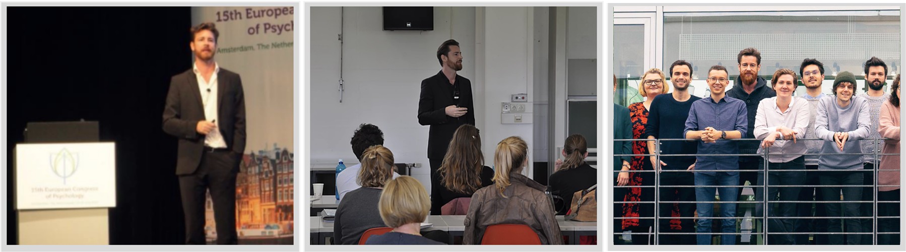

Information
Dr. habil. David Daniel Ebert

About
Dr. Ebert’s research focuses on the development and evaluation of evidence-based Internet- and mobile-based health interventions, designed and tailored for various settings and areas of life (work, university), with a particular focus on the prevention and early intervention for mental disorders.
Further research areas include health economic evaluations of psychological interventions, identifying protective factors for mental health, and the development and testing of multivariate prediction models for psychosocial health development.
Dr. Ebert received his doctorate in Psychology in 2013 at the Philipps-University Marburg (with special honors, summa cum laude).
Dr. Ebert served as scientific staffer at the Department for Clinical Psychology and Psychotherapy at the Philipps-University Marburg, operative project head of “Gesundheitstraining.Online” at Leuphana University Lüneburg (18 scientific co-workers, 2011-2014) and subsequently continued his work at Harvard Medical School’s Department for Health Care Policy in Boston.
Together with his team, Dr. Ebert developed more than 15 internet-based health intervention systems, whose efficacy and cost-effectiveness have been evaluated in over 40 randomized-controlled trials.
Besides numerous book chapters and german-language publications, Dr. Ebert has published more than 100 peer-review articles in international journals. He has raised more than 5 Million € (~ 6 Mio. USD) in funding, and he is a key representative/work package leader in numerous european FP7/H2020-projects concerning the prevention (iCARE, H2020) and treatment of mental disorders (Mastermind, EC FP7, CIP Pilot Actions) and their implementation into routine care.
Furthermore, Dr. Ebert is President and board of directors member of the International Society for Research on Internet Interventions (ISRII), an international society for digital health intervention acting globally. He also serves as the board of directors member of the German Society for Psychology Health Psychology Group, German Society for Psychology EFPA emissary, founding member and board of directors member of the
„European Society for Research on Internet Interventions” (ESRII), and member of the editorial board for Elsevier’s Internet Interventions, and as Associate Editor for BMC Medical Research Methodology.
Besides his academic activities, Ebert focusses on implementing evidence-based internet- and App-based interventions for the prevention and treatment of mental disorders into routine care. He thus founded the GET.On Institute, with funds from the European Union. Aim of this transfer institute is to solely implement interventions with an excellent scientific basis into routine care. He also served as head of the scientific innovation department of Schön Clinics, one of the largest private Clinic chains in Germany, where he implemented internet-based psychotherapical treatments into routine care and served as counsellor for firms and clinics with respect to the implementation of online-therapy into routine care.
Dr. Ebert has been awarded numerous national and international prizes and awards, including the Early Career Research Award of the ISRII, the Award of the German Society for Behavior Therapy (DGVT) for innovations in behavior therapy (2014), the 2015 award of the German Society for Psychology Clinical Psychology Group (DGPs), the Charlotte-Karl-Bühler-Award 2016 for his scientific work “reaching the status of a comprehensive research program, which has had tremendous impact on psychology and further fields of research”, as well as the Comenius Award of the European Federation For Psychologists Association (EFPA).
Awards
- Comenius Award of the European Federation of Psychologist Association (EFPA) selected from nominations from all european national societies for scientific psychology in Europe 2017
- Charlotte- und Karl-Bühler Prize of the German Society for Psychology for the “scientific work which has reached the status of a research program and which has already influenced psychology and research fields beyond”
- Young Researcher Award 2015 of the Clinical Psychology and Psychotherapy Group of the German Society for Psychology
- Prize of the German Society for Behavior Therapy (DGVT) for special contributions on the field of behavior therapy, 2014
- Grant Personal Mobility EU Erasmus for scientific work at the Free University Amsterdam (Prof. Dr. Pim Cuijpers), October-December 2013
- DRV Special Poster Prize 2012 for the study „Web-basierte Nachsorge: nur was für junge und hoch gebildete Rehabilitanden? Sekundäranalysen einer randomisiert kontrollierten Studie zur Überprüfung der Effektivität einer transdiagnostischen web-basierten Rehabilitations-Nachsorge (W-RENA)“. 21. Reha-bilitationswissenschaftliches Kolloquium, Hamburg, March, 2012.
- Early Career Researcher Award 2011 of the International Society for Research on Internet Interventions, April 2011
- Travel Scholarship of the DAAD for the “41th Convention of the Eruopean Association of Cognitive & Behavioral Therapy” Reykjavik, Iceland, October 2011
- Nominated for Janssen Future Prize 2012
- Grant in Aid for presentation at the “State of the Art-Forum” within the ISRII-Convention 2011, Australian National University, Sydney, Australia, April 2011
- Travel Aid for the “44th Convention of the American Association of Cognitive & Behavioral Therapy” San Francisco, USA, November 2010
- Prize for Innovative Teaching of the Leuphana University Lüneburg, 2008
- PhD Scholarship of the Leuphana Universität Lüneburg
Funding & Grants
- Reducing the incidence of depression for patients with back pain and subclinical depression using an internet- and mobile-based intervention: Follow-up assessment of a pragmatic randomized controlled large-scale trial. DFG. Laufzeit: 15 Monate; 2018-2019. Fördermittel €96.926.
- Mit uns im Gleichgewicht. Prävention von Depression bei Landwirten, SVFLG, 1.3500.000€ (PI)
- Children Of Mentally Ill Parents At Risk Evaluation (COMPARE) 3.379.853€, 154.000 für Ebert (CO-PI, PI: Hanna Christiansen, Universität Marburg)
- “Mann schaffts” Männer für präventive Angebot erreichen. 1.450.000€, BARMER GEK. (PI) (Bewilligung, derzeit in Vertragsausarbeitung)
- Internet-basierte Interventionen zur Förderung psychischer Gesundheit und Prävention psychischer Störungen bei Studierenden, BARMER GEK, 2016-2021, 1.248.600€ (PI)
- ImpleMentAll, Towards evidence-based tailored implementation strategies for eHealth, EU, H2020, SC1-PM-21-2016, 7.071.638,75€ (CO-PI and WP leader, PI: Claus Pederson, University Odense, Denmark, 384.000€ für Ebert) (bewilligt)
- Attitudes of Professionals and the General Public in Israel Regarding Therapist Guided Internet Cognitive Behavioral Therapies (ICBT) to Treat Anxiety and Depression, NIHPR Israel, appr. 90.000€ (Co-PI, PI: Jonathan Huppert, University of Jerusalem)
- PaivinaCare - Entwicklung eines Internet-basierten Selbsthilfekonzeptes für Frauen mit Genito-Pelviner Schmerz-Penetrationsstörung, Gender-Forschungsförderung der Friedrich-Alexander Universität Erlangen-Nürnberg, 2016-2017 (PI).
- I-CARE: Integrating technology in mental health care in Europe. European Union Horizon 2020. 2015-2019, 5.980.000€, 647.000€ für Ebert (Co-PI und WP Leader).
- Digitale Gesundheitsprävention für Existenzgründungen – BMBF Förderschwerpunkt: Präventive Maßnahmen für die sichere und gesunde Arbeit von morgen . 1.378.576,37 €, 321.281€ für Lehr/Ebert/Funk (Co-PI, PI: A. Ducki)
- Implementierung online-basierter Behandlung von Depression in die Routineversorgung, BARMER GEK. 2.300.000€ (PI; außeruniversitäre Gelder lokalisiert an der Schön-Klinik Kette).
- Management of mental health disorders through advanced technology and services – telehealth for the MIND. European Comission. CIP-Pilot actions; CIP-ICT-PSP-2013-7; Mastermind 16100, 2014–2017. 7.000.001€, ca. 450.000€ für Ebert/Berking (CO-PI und WP Leader).
- European comparative effectiveness research on Internet-based depression treatment; European Union. FP7-HEALTH-2013-INNOVATION-1, 2014–2017 5.827.000, 461.155€ for Ebert/Berking (Co-PI).
- Effectiveness of a guided web-based intervention for depression in back pain rehabilitation aftercare: a multi-center randomized controlled trial. BMBF – Studies in health services research. 519.000€, 159.000€ für Ebert/Berking (Co-PI, PI: H. Baumeister, Universität Freiburg).
- Online-basierte Prävention psychischer Störungen. BARMER GEK, 2014–2015. 30.000€ (PI).
- Internet-basierte Gesundheitsinterventionen als innovatives Instrument zur Prävention psychischer Störungen, BARMER GEK, 2013–2014. 54.000€ (PI).
- Evaluation eines internetbasierten Trainings für Schlafstörungen & arbeitsbedingtem Stress. „Gut erholt – frischer im Schulalltag“. Unfallkasse NRW, 2012–2014. 72.200€.
- Internetbasierte Gesundheitsinterventionen: Stand der Forschung und Implementierungsmöglichkeiten in der medizinischen Rehabilitation [Expertise]. DRV, 2012-2013, 30.093€ (Co-PI, PI: H. Baumeister Universität Freiburg).
- Internet-based health interventions. EU EFRE (ZW6-80119999, CCI 2007DE161PR001). Dauer: 36 Monate, 2011–2015. 2.589.789€ (Projektkoordinator, PI: M. Berking, B. Funk, B. Sieland).
- Evaluation einer online-basierten Transferförderung nach stationärer Depressionstherapie, Bundesministerium für Bildung und Forschung. Chronische Krankheiten und Patientenorientierung (01GX1002), 2011–2014. 419.170€ (Co-PI, PI: M. Berking).
- Evaluation einer online-basierten transdiagnostischen Nachsorge zur Förderung der Stabilität der Effekte einer stationär-psychosomatischen Rehabilitationsmaßnahme“ von der Fachklinik für Psychotherapie und Psychosomatik – Vogelsbergklinik, 2007-2009. 100.000€ (PI)